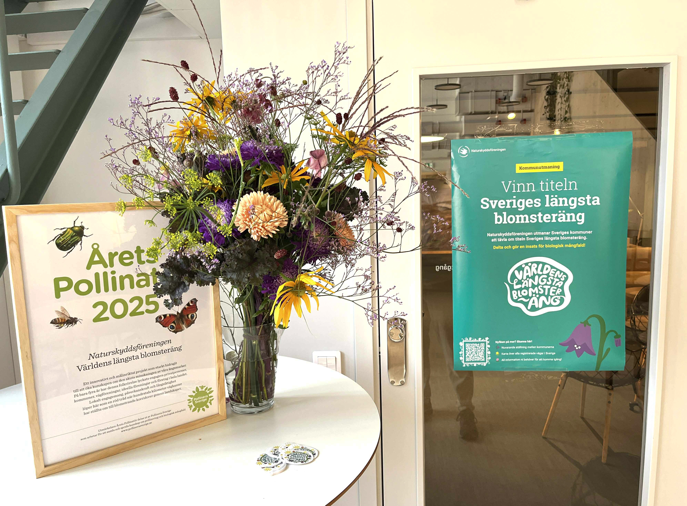
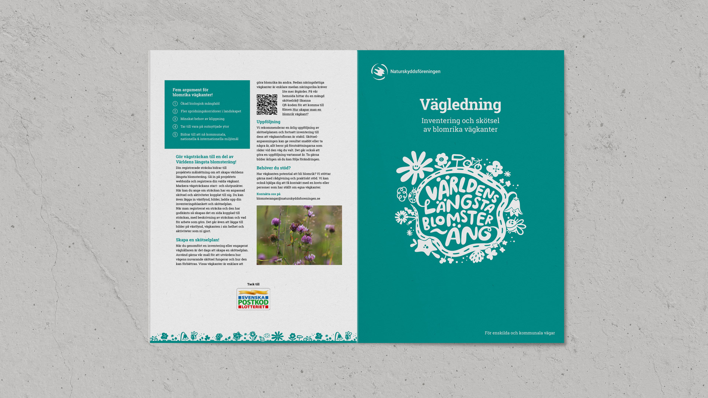
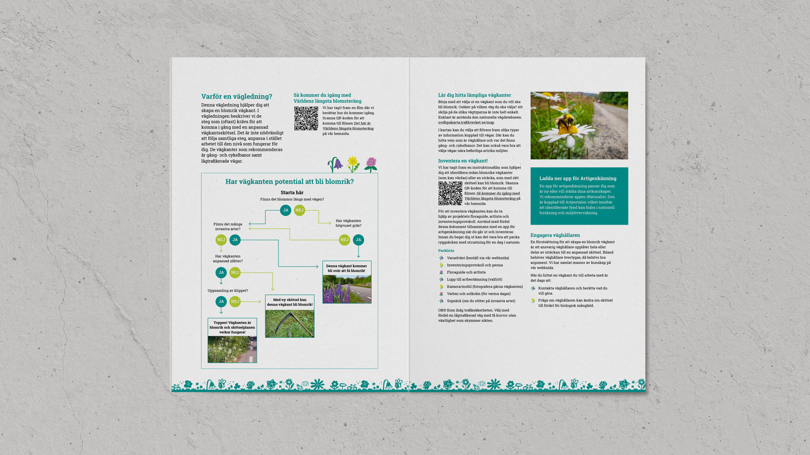

SWEDISH SOCIETY FOR NATURE CONSERVATION / NATURSKYDDSFÖRENINGEN
Världens längsta blomsteräng (The world's longest flower meadow) is a lovely project
where Naturskyddsföreningen aims to plant 1000km of meadows along the country’s roadside
verges with the help of municipalities and individuals.
In this project I made marketing materials for 'Världens längsta blomsteräng'.
I made posters, social media content and a guide for municipalities to get involved in the project.


